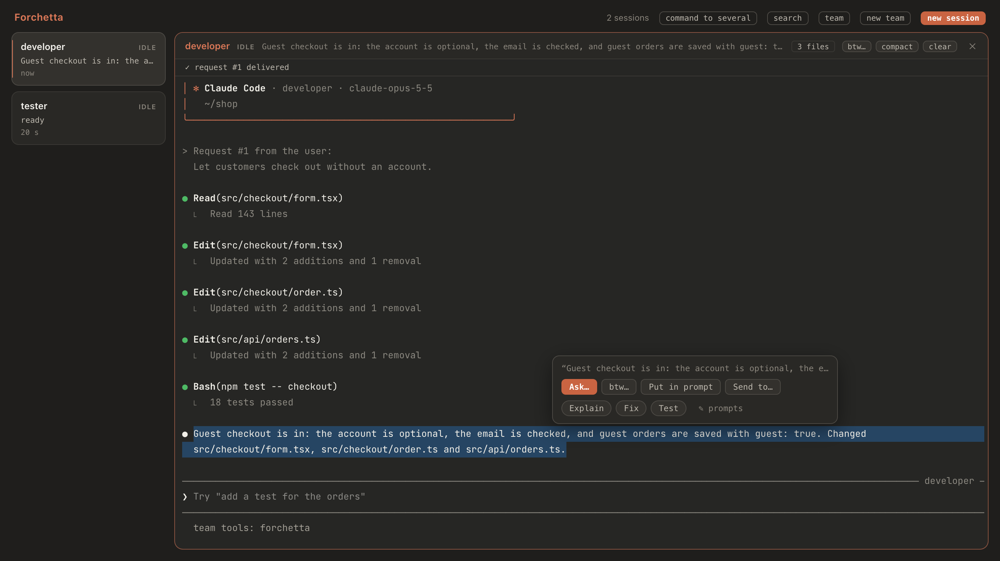
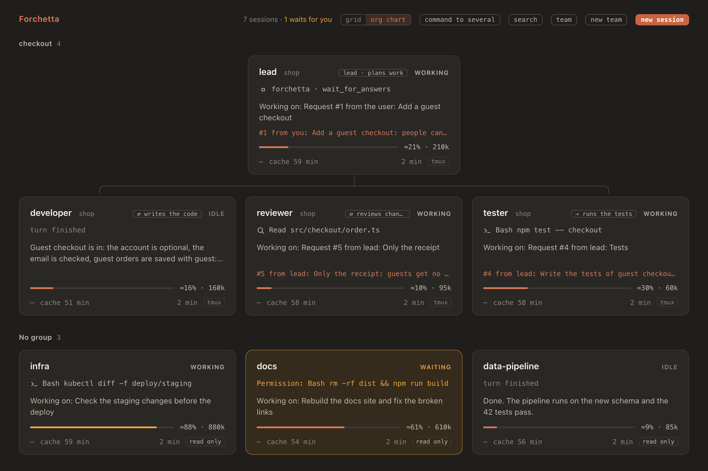
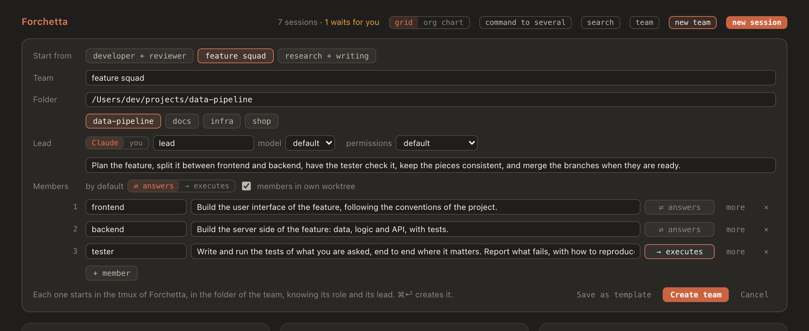
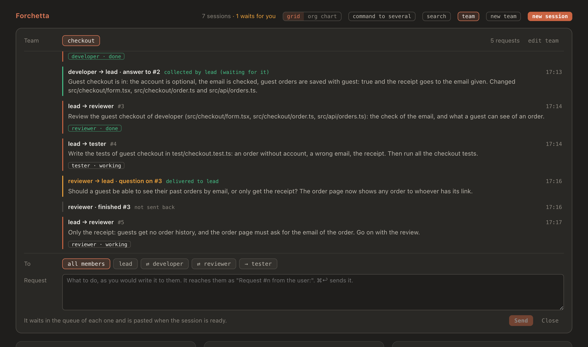
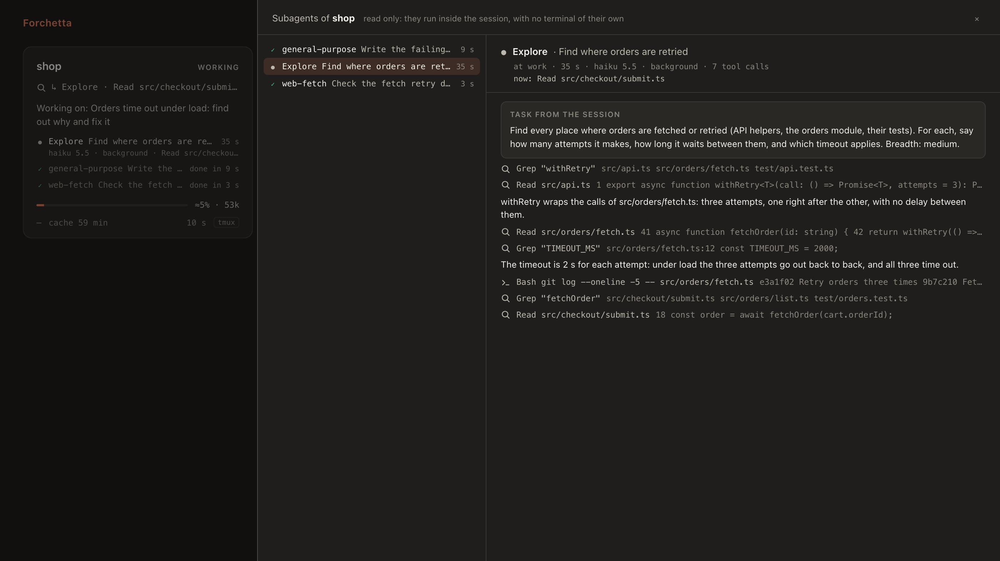

Getting started
You need macOS 12 or later and Claude Code. With Homebrew:
brew install alessiodonato/tap/forchetta forchetta setup
Homebrew brings Node.js and tmux with it. forchetta setup checks tmux, Claude Code and the Xcode Command Line Tools, builds the app on your Mac and puts it in ~/Applications, then adds the hooks of Forchetta to Claude Code. It shows you every change to ~/.claude/settings.json first, and asks; answer d to see the whole diff. Built on your Mac, the app opens with no warning from macOS.
Open Forchetta from ~/Applications. The Claude Code sessions already running show up on their own, wherever you started them: in the Terminal, in iTerm, in an editor.
Sessions you can act on
Forchetta shows every session, but it can type into a session, and open its terminal, only when the session runs in its own tmux. Start a session there in one of two ways:
- in a terminal, with
forchetta run claude, which takes the same arguments asclaude(forchetta run claude --continue); - in the app, with new session or new team (teams once you have one).
A session started with plain claude is read only: its box shows what it does, and you can answer its permissions, but Forchetta cannot send it commands. Hover its box to read why.
To go through Forchetta every time you type claude, add an alias to ~/.zshrc. forchetta run uses the full path of claude, so there is no loop; command claude runs the original once.
alias claude='forchetta run claude'
Living in tmux
- Closing the Terminal window does not end the session: it only detaches it. Claude goes on, and Forchetta goes on showing it.
/exitends it. - Ctrl-b d detaches without closing the window.
- To attach again from a terminal, open its pane in the app, or use tmux with the socket of Forchetta:
tmux -S "$HOME/Library/Application Support/Forchetta/tmux.sock" attach -t fk-xxxxxxxx(the names come from… lswith the same socket). - The daemon of Forchetta starts by itself. Stopping it, or quitting the app, stops no session.
After brew upgrade forchetta, run forchetta setup again: it builds the app again only when it changed.
Windows and Linux (beta)
Forchetta runs the sessions in tmux, which Windows does not have. On Windows it runs inside WSL 2, the Linux of Windows, and its page opens in a window of Edge or Chrome. On Linux it works the same way, in your browser.
- If you do not have WSL yet, in PowerShell:
wsl --install, then restart Windows and open Ubuntu from the Start menu. The next steps are in that terminal. - Claude Code inside WSL, if it is not there:
curl -fsSL https://claude.ai/install.sh | bash. - tmux 3.2 or later (Ubuntu 22.04 and later have it) and Forchetta:
sudo apt install tmux curl -fsSL https://forchetta.dev/install.sh | sh forchetta open
The installer needs no root: Forchetta goes in ~/.local/lib/forchetta, and without Node.js 22 one from nodejs.org goes next to it, only for Forchetta. Then it runs forchetta setup, which checks what is missing and adds the hooks, showing you every change to ~/.claude/settings.json first. To update, run the installer again.
forchetta open starts the daemon when it is off and opens the page with a code that is good once, for two minutes. After a restart of the daemon, open the page with it again. In Settings, allow them turns on the notifications of the browser, which come while the page is open.
What differs from a Mac
- The sessions are those inside WSL. Claude Code started in PowerShell, or Claude Code for Windows, has its own settings and does not reach Forchetta. When both are installed, start the one of WSL.
- Keep your projects in your home of WSL (
~/projects), not under/mnt/c: there they work, but are much slower. Forchetta itself must not be under/mnt/c. A folder can be written as Windows does (C:\Users\you\shop). - The shortcuts are with Ctrl in place of ⌘. Inside a terminal they go to Claude Code, except CtrlV, which pastes; Ctrl-click opens a link. In a tab of the browser, instead of the window
forchetta openmakes, the browser keeps some of them for itself (CtrlN, CtrlW). - Dragging the mouse in a terminal copies into the clipboard of Windows; Shift-drag selects in the page.
- There is no app: no menu bar, no shortcut from any program, and
forchetta daemon keepaliveis only on a Mac. Windows may stop WSL after its last terminal closes: keep one open while the sessions work. - The data is in
~/.local/share/forchetta.
To remove it: forchetta hooks uninstall, forchetta daemon stop, then delete ~/.local/bin/forchetta, ~/.local/lib/forchetta, ~/.local/lib/forchetta-node and ~/.local/share/forchetta.
The window
One box per session. It shows up when the session starts, fades when it ends, and goes away 10 minutes later. Each box shows:
- the project (or the name you gave it) and the state, with a dot when the session finished, or stopped on an error, since you last looked: a click on its box, or its open pane, marks it seen;
- the current action,
Edit src/api.tsorBash npm testfor example, or what the session is asking you; when it is not at work, what the state does not say already: finished 12 min ago, the error in words (5-hour limit used up · back 4:40 PM), its folder while it starts; - a short summary, from the last request and the last reply;
- the context, as a bar and as a share of the window (the tokens are in its tooltip; see Context, cache and cost), and the prompt cache when it is about to expire, with arricurdAI;
- the cost of the session; while it works, how long its turn has gone on (for 12 min), and while it waits, for how long; read only for a session outside the tmux of Forchetta.
The states
| State | How it looks |
|---|---|
| working | orange dashes run along the bottom of the box, in the column and in its square when the column is hidden |
| waiting for you | amber, with a breath: a permission, a question, a plan to approve |
| turn finished | green for a moment, with a check; a green dot stays until you look |
| error | red, with a single shake, and a red dot until you look |
| compacting | the context bar squeezes |
Amber, green and red only ever mean a state. Claude orange marks what you can act on (the buttons that start something, what you chose, the pane you are typing in) and work under way: the dashes of a session at work, the requests of a team. With “Reduce motion” on in macOS, the states stay recognizable but still. When the window is hidden, nothing moves. At rest, the app, the page and the daemon together stay under 1% of CPU.
Names, groups and roles
Hover a box and click ✎ to give the session a name (shown in place of the folder), a color (a dot before the name, in the box, the column and the pane, and a tint in the background of its terminal, to tell sessions apart at a glance), a group, a role in free text, and the mark lead of the group. The choice is kept for its folder too: a session that starts again in the same folder finds its place again. Remove clears it.
With at least one group, grid / org chart appears at the top. In the org chart each group has its section, the leads above and the others below; the sessions with no group come last. A team of agents is a group too.
After a restart of the Mac
A restart closes every session: each one is a Claude Code process, in the tmux of Forchetta or in a terminal, and none survives it. Their conversations stay with Claude Code. When Forchetta starts again it finds the sessions that ended with the Mac (their last sign of life came before the Mac started) and says so at the top: 4 sessions ended when the Mac restarted: api, docs and the team Studio (2).
- Reopen all: each session goes on with its conversation (
claude --resume), in its folder, with its name, color and model, in the tmux of Forchetta, also one that ran in another terminal. A member of a team goes back into its team, with its role, its prompt and its tools; a request it was working on when the Mac stopped is marked failed, to send again. - Choose… lists them, with how large each conversation is: Claude reads the whole of it again at the first message after it reopens, and a large one (in amber) costs a share of your limits. reopen one, or × to leave it.
- Not now: they are offered no more. They are offered for a week anyway.
- The box of any session that ended has reopen too, while it shows. The runs of automatic teams are not offered: their automation pauses, and again starts them over.
From a terminal: forchetta reopen lists them, forchetta reopen --all reopens every one, forchetta reopen api "Studio" those named (a team: all its sessions).
The terminals
Click a box to open the terminal of its session in the work area; the boxes become a column on the left. Up to four terminals stay open:
- 1: the whole area; 2: side by side; 3: the one you activated last, large on the left, the other two stacked; 4: two by two.
- The fifth click replaces the pane used longest ago. To choose every time, set
"panes": { "replace": "chiedi" }in the configuration. - ✕ closes the pane only: the session goes on in tmux and stays in the column.
- The sessions of a team are one box in the column, with the name of the team, how many they are, how they are doing (2 working, 1 waits for you in amber) and what they used. Click it to show its sessions under it, the lead first; again to hide them. Forchetta remembers which teams you opened.
- ‹, at the top of the column, hides it and gives its room to the panes; › brings it back. Hidden, the column is a thin strip with one square per session: its initial in its color, amber when it waits for you, red on an error, a green dot when it finished since you last looked. Click a square to open its terminal; hover it for its name and state. The window remembers the choice.
Inside a terminal
- You type as in the Terminal, with the keys of Claude Code: Esc interrupts, Shift+Return starts a new line.
- Option stays Option: on an Italian keyboard it types @, # and the square brackets.
- The wheel scrolls the history of tmux. That puts the pane in tmux copy mode, where the keys go to tmux, not to Claude: the pane says so under its header. Click back to the end, press q, or scroll to the end, to type to Claude again.
- Dragging selects text: when you let go, tmux copies it to the clipboard and the menu of the selection opens there. Option + drag selects with the terminal of the page instead.
- ⌘ + click on a link opens it in your browser: https anywhere, http only on this Mac. A plain click stays with the terminal.
- Typing in a pane keeps the keyboard there, even while Claude answers in another pane.
- macOS 12 has the ⏺ of Claude Code only as a color emoji, two cells wide: there the panes show it as ●. Only the drawing changes.
Ask about a selection
Select text in a pane. When you let go it is copied to the clipboard, as before, and a small menu opens there. It does not take the keyboard: typing in the terminal, or clicking anywhere else, closes it.

- Ask…: your question to this session, with the selection quoted under it. It goes as your prompt when the session is ready, with the same checks as the commands.
- btw…: the question as
/btw, kept out of the conversation: on one line, with the selection in quotes. - Put in prompt: the selection, quoted, into the prompt of the session, not sent. Write the question around it and press Return.
- Send to…: your question to another session, with the selection and the name of the session it comes from.
Under them are the quick prompts: questions you write once and send with one click, with the selection in them. Explain, Fix and Test come with Forchetta; ✎ prompts changes them. Each has a name, a text and where it goes (sent, as /btw, or into the prompt). In the text, {selection} is the selected text (quoted when it is alone on its line; when it is missing, the selection goes after the text), {session} the name of the session, {folder} its folder.
The selection loses what Claude Code draws around its text: ⏺ and ⎿, the sides of its boxes, the indentation.
Commands to a session
Hover a box, or look at the header of an open pane: btw…, compact and clear. They work for sessions in the tmux of Forchetta.
- btw… opens a field for a side question; Return sends it. Its answer shows only in the terminal of the session: open takes you there.
- compact goes at once.
- clear asks first, with the tokens it will empty. With arricurdAI 0.5.0 or later, a note is written first, so the new conversation starts where the old one left off.
When a command goes
Forchetta types a command as you would, and only when it is safe. Until then it waits in the queue of the session, and the box says why (queued: /compact · waiting for the turn to end). It goes when:
- the session waits for a new prompt: never into a dialog, where a key could answer for you;
- nobody typed in the session in the last 10 seconds;
- the prompt is empty: a draft of yours blocks it until you send or delete it. One text is not a draft: the prompt a hook refused (arricurdAI does when the cache expired), which Claude Code puts back in the prompt.
/clearand/compacttake it out, run, and put it back, not sent; - the terminal is not scrolled back in copy mode;
- the pane still belongs to the same Claude process.
A command still in the queue can be cancelled from the box. /compact is confirmed by its hook; /clear by the end and the start of the conversation.
A prompt a hook refused starts no turn. Claude Code tells the hooks of the prompt all the same, and says it was refused only in the transcript: Forchetta reads it there within a few seconds, and the box goes back to what it was.
One command to several sessions
With at least two sessions you can act on, to several appears at the top. Choose /compact, /clear or /btw, then the sessions: one by one, context ≥ 80%, all or none. Each one gets its command as if it came from its own box, with the same queue and the same checks.
Permissions from the box
When a session asks for a permission, its box shows the request in full, with Allow and Deny. It works for every interactive session, read only ones too.
- Allow works once, like “Yes” in the Terminal.
- always… shows the lasting choices Claude Code offers for that request (a rule, a folder, a mode), each with where it applies: this session, or the project for you or for everyone. Claude Code writes the rule. Choices for every project, and skipping all permissions, stay in the Terminal.
- Deny stops Claude, like “No”: it reads that you denied it from Forchetta, and waits for your next prompt.
The dialog stays in the Terminal too, and whoever answers first wins. Before it sends your answer, Forchetta checks that the session still waits. The buttons wake up 0.7 s after the request appears, so a click meant for something else does not answer it. Questions and plan approvals have no buttons: answer them in the terminal.
- Before it sends your answer, Forchetta asks
claude agents --jsonwhether the session still waits. If you answered in the terminal meanwhile, the box says Already answered in the terminal and sends nothing: that is why a click takes about half a second. - The rule Claude Code offers the box can be narrower than the one in the terminal: for that exact command, for example, instead of every
python3 …. - A request stays in the box for an hour at most, then only in the terminal. If the daemon stops, requests go on in the terminal.
New session
+ new, at the top, then session (or ⌘N, anywhere in the window) opens a panel. Type the folder (~/ works), pick one of the recent ones, or use Choose…. The first prompt is optional; ⌘↩ starts.
- model: Opus, Sonnet, Haiku or Fable, for that session only (
--model). It does not change your default model. - permissions: asks every time, accepts edits, auto or plan (
--permission-mode). - new worktree, with an optional name: Claude Code makes a git worktree for the session alone (
--worktree). The folder must be in a git repository that Claude Code trusts.
The session starts in the tmux of Forchetta through your login shell, so it has the PATH of a new Terminal tab, and its terminal opens at once. A folder you never opened with Claude asks there whether you trust it.
Teams of agents
A team is a group of Claude Code sessions that work together. A lead gives the requests and the members carry them out. The lead is a Claude session, or you.

Create a team

- Click + new at the top, then team (or ⇧⌘N).
- Optionally, Start from a template: developer + reviewer, feature squad (frontend, backend, tester), manager › senior › junior (three levels), research + writing, or one you saved.
- Give the team a name (it becomes its group in the org chart) and a folder: type it, pick a recent one, or use Choose….
- Choose the lead: Claude, with a name, a role, a model and a permission mode, or you.
- Add the members, as many as you need: a name and, in one sentence, what each one does. more holds the model, the permissions and the worktree of a member, its files, and whether it reviews.
- Under each member, its relation with the one above it: who it reports to (the lead, or another member: see More levels), how it talks with it (⇄ or →), and, if you like, the prompt of the relation. + report adds a member under it.
- Choose whether the members work in their own worktree.
- Create team, or ⌘↩.
Every session starts in the tmux of Forchetta, the lead first. From its system prompt each one knows who it is, its role, its lead and the other members. Its name shows in its box, in its pane and in Claude Code. Save as template keeps the team without its folder, to start it again elsewhere.
The studio: draw a team
The video Draw a team, then let it run (4:51) shows the studio and the automatic teams step by step.
+ new › draw a team, at the top (or ⌥⌘N, or or draw it in the studio in the panel of a new team), opens a canvas over the whole window. On the left the presets: agents (manager, senior, junior, developer, reviewer, tester, frontend, backend, researcher, writer, and yours) and whole teams (the templates). On the right, whatever you selected. + new agent, under the agents, is one of your own: drag it onto the canvas and fill its box there, or click it to write a preset for every team, with its name, role, model, permissions and skills.

- Drag agents, or a whole team, onto the canvas. Each agent is a box; move it where you like.
- Pull an arrow from the dot under You or under a box, and drop it on the agent it leads. On release you choose the relation: ⇄ answers or → executes, and its prompt. An agent has one arrow coming in; a new one moves it under someone else, and a circle is refused.
- If You point at one agent only, and it leads others, it is the Claude lead of the team (its arrow says lead). If You point at several, you lead, and they are the members at the top.
- Click a box to change its name, role, model, permissions, worktree, files, review, skills and tools; click an arrow, or its label, to change the relation. Delete removes what is selected; the agents it led go up to the one above it. ⌘Z undoes the last change of the canvas, ⇧⌘Z does it again (also ↶ and ↷, at the top); changes in a row, like typing a role or dragging a box, are one step.
- In the right column, with nothing selected: the folder of the team (Choose… opens the panel of macOS), the default of the arrows and the worktrees, and what is still missing before it can start. Tidy up lays the boxes out as a tree.
- Create team starts it, as the panel does; Save as template keeps it among the teams, with where its boxes stand.
Skills
Under the teams, the skills: open-source skills of Claude Code chosen from the best-known repositories (obra/superpowers, anthropics/skills, addyosmani/agent-skills, vercel-labs/agent-skills, trailofbits/skills, multica-ai/andrej-karpathy-skills), grouped by what they are for: plan, build, debug and quality, review, security, test, docs. Click one to read what it does, where it comes from, its license and what it weighs; drop it on an agent to give it that skill, or add it from the skills of the agent, on the right. Most agent presets come with two or three, and so do the agents of the teams of Forchetta (the junior of manager › senior › junior has the skills of the junior preset); 8 at most for an agent.
- Nothing is downloaded while you choose. When a team starts, Forchetta fetches the skills it does not have yet: only their folders, at the commit of the catalog (the version that was checked, never one that moves), into its own folder (
skills/in your data), not into your project. The next teams find them there. - Each agent gets only its own, for its session only (
claude --plugin-dir): they show asforchetta-skills:pdfand so on. Until it uses one, an agent carries only its name and description. - A skill that cannot be fetched (no network, say) does not stop the team: it starts without it, and the panel says which.
Skills of your own. + add a skill, at the top of the skills, takes the link of the folder of a skill on GitHub (…/tree/main/skills/name, with its SKILL.md), or a folder of this Mac (Choose…). From GitHub, Forchetta finds the commit the link points at now and keeps it, so the skill does not change by itself, and fetches only that folder into its own. A folder of yours is used where it is, never copied: what you change in it counts from the next session that has it. They show under Yours, and an agent takes them like the others; a session that sets up teams from a document can use them too. Take away on its card removes one, unless an agent, a template or a team still uses it.
Every preset can be changed and duplicated. Click an agent on the left to edit it: saving one of Forchetta makes it your version, marked with a dot, and Restore brings theirs back. Save as preset, on a box, keeps an agent you set up. Click a team to Open it on the canvas (it replaces what is there), add it, duplicate it, or delete it; saved with the same name, a team of Forchetta becomes your version too. Closing the studio keeps the canvas until you come back.
Rules and notes
In the right column, with nothing selected, Rules of the team: what every agent follows, whatever its role (the conventions of the project, how to commit, what never to do). Each session of the team gets them in its system prompt, after its role; nothing is written in the folder of the project, and a CLAUDE.md of yours stays as it is. The panel of a new team has the same field, and a session that sets up teams from a document can write them too. + note, at the top, puts a note on the canvas, for whoever opens the team after you; the agents do not read it. Rules and notes are kept with the template.
Describe it, and Claude draws it
Describe…, at the top of the studio, takes a sentence or a few: what the team is for, and who does what if you know (“a team to move the frontend to React 19: a lead that plans, two developers on separate folders, a tester with a browser, a reviewer that approves before the merge”). Claude draws it on the canvas, with roles, models, skills, tools, arrows and their relations, starting from your presets. It replaces what is on the canvas (⌘Z brings that back); change what you like, then Create team or Save as template. Nothing starts before that.
- It runs your Claude Code in print mode (
claude -p, Sonnet), with your account and your plan, but alone:--safe-mode(none of yourCLAUDE.md, memory, skills, plugins or MCP servers), no tools, no hooks, nothing kept of the conversation. It usually takes 20 to 60 seconds and a few cents. - Forchetta checks the team as it checks every template; one it refuses goes back to Claude once, with the reason, and so does one that works against itself (the checks before it starts): if the second answer is worse, the first stays. A name you already have gets a number.
- The Studio Maker has no Claude of its own: Copy the prompt for Claude copies the whole request, to paste in a chat with Claude; its answer goes in Import.
The tools of an agent
Besides its skills, each agent can have tools of its own, for its session only, on the right of its box:
- Limits: read only (no Edit, Write or NotebookEdit; it can still run commands), no shell (no Bash), no git push, no web (no WebFetch, no WebSearch). Claude Code refuses those tools to that agent (
--disallowedTools), and its system prompt says so. - MCP servers from a small catalog, each pinned to a version: a browser (Playwright MCP 0.0.84), Chrome DevTools (chrome-devtools-mcp 1.12.0, its usage statistics off) and library docs (Context7 4.5.1, which asks
context7.com). Drag one from Tools, on the left, onto an agent, or add it from its tools. Its session gets it in its own MCP configuration, run withnpxat that version (fetched from npm the first time), with its tools allowed without asking for that agent. The browsers run headless, with a profile that is not kept, so that several agents can use one at once. - none of your MCP servers: the agent starts with only its own and those of the team (
--strict-mcp-config), not the ones of your Claude Code.
The presets of Forchetta give the reviewer read only and no git push, the researcher read only, and the tester a browser. The lead sees what each member has. A team file carries only the names of the catalog, never a command: opening a team from someone else runs nothing new.
You approve before it goes on
On an arrow from an agent to one it leads, you approve its requests first makes a point of the chart where you look: every request sent along it waits for your yes, and the arrow says · you approve. The plan of the lead before the developers build it, say. Your own requests go at once.
- A request that waits shows in the team panel, in amber, with Approve, Change… (you rewrite it, and it goes as you wrote it) and Send back… (with a note: the one that sent it gets “The user sent back request #4 to developer:” and your reason, and changes the request or goes on without it). A notification tells you, and the box of the sender says waits on #4 developer (your approval).
- The lead knows which members wait for you. A wait for answers (
wait_for_answers) counts a request that waits for you as still open. - On a running team the arrow can change too, from its studio: it counts from the next request, and the one above is told.
Parameters, a first goal, what it delivers
- Parameters: write
{ticket}(lowercase letters, digits,_and-) in a role, a relation, the rules or what the team delivers, for what changes each time it starts. In the right column of the studio, what each one is and its default go with the template, and its value is for this start. A team starts only when each one has a value; its sessions read the texts filled, and your requests to it are filled too (“Fix {ticket}” reaches it as “Fix APP-123”).${HOME}of a shell is not a parameter. From the terminal:forchetta team start bugfix --set ticket=APP-123 --goal "Fix {ticket}". - Its first goal: what to do first, sent to the lead as soon as the team starts (to every member when you lead), like
--goal. - It delivers: what the team hands over when its work is done, in a line (a pull request,
docs/report.md, a report). The Claude lead gets one more tool,deliver, and calls it when the work is ready and checked: you are told, and the team panel says ✓ delivered, with where it is.
What it checks before it starts
Some settings work against each other, and a team made so would find out only at work. The studio marks them with an amber ▲ on the boxes they are about, lists them under Worth checking in the column of the team, and says the first one in the line at the bottom. They do not stop it: the team starts anyway.
- A member in a worktree of its own that writes but has no shell: it cannot commit, so the one it reports to never sees its work.
- A reviewer with no shell (without
git logandgit diffit cannot see the commits); one with no one else in the team who writes and commits; one that can change the files, which may fix the code itself instead of approving it or sending it back (give it read only). - A team that delivers a pull request, or something pushed, when no agent can
git push. - A team that delivers something when you lead it: only a Claude lead says when it is delivered.
- Two members that change files in the folder of the team at the same time, none with files of its own or a worktree. One above the other does not count: it waits for the one below.
Only what follows from the settings, never a guess from the words of a role. The panel New team shows the same ones above Create team, and forchetta team start prints them once the team started.
A canvas for large teams
- Zoom: −, + and Fit at the bottom right, a pinch on the trackpad, or ⌘+, ⌘−, ⌘0. When the team does not fit, a map at the bottom left shows where you are; click it to go elsewhere.
- Several boxes: a rectangle drawn from an empty spot selects the boxes it touches; ⇧-click adds one or takes it away; ⌘A selects them all. Drag one of them to move them all, Delete to take them away.
- ⌘C and ⌘V copy and paste boxes with the arrows between them, ⌘D duplicates them; a copy gets a name of its own (senior 2, senior 3).
- The right button, on a box or an empty spot, has the same: duplicate, copy, paste, save as preset, remove, add a note there, tidy up, fit.
- ⌘Z undoes the last change of the canvas, ⇧⌘Z does it again (also ↶ and ↷, at the top). In a text field they are the field's own.
A team as a file
Export, at the top (or on a team of the palette), saves the team as a file, <name>.forchetta-team.json, in your Downloads: roles, models, relations, rules, skills, where the boxes and the notes stand. Import opens one: drop the file anywhere on the studio, or paste its text. It opens on the canvas in place of what is there (⌘Z brings that back). When it brings skills of GitHub this Mac does not have, nothing is fetched yet: the studio lists them, each with a link to its folder at the commit the team names, and you choose Fetch them and open or Open without them. A skill that was a folder of the other Mac is left out, and the studio says so. Forchetta opens only files of its own format.
The Studio Maker, on this site, is the same studio in a browser: make a team there, export it, and open the file here. It keeps what you draw in the browser as you go; it has no folder and starts nothing.
The studio on a running team
studio, in the panel of a team, opens that team on the canvas while it works. Each box says what its agent is doing and what it used; each arrow, what goes along it: orange, a request in the queue (dashed) or at work; green, an answer coming back; amber, a question. While it runs you can:
- add an agent: drag it onto the canvas (it says not in the team yet), draw its arrow from the one it reports to, then Add to the team: its session starts with the others;
- change ⇄ or → on an arrow (it counts from the next request), or the files of a member;
- take a member away (Remove from the team, in its panel): its session closes.
A running session keeps its role, model, skills, tools and the prompt of its relation: change them in a template (Save as template keeps the team with where its boxes stand) for its next start.
Replay, at the top, shows the run of the team again, step by step: each request, approval, question, answer, verdict and delivery, in order, from the file of the team and the ledger. ▶ plays it one event after the other, ◀ and ▶| step, the bar goes to any moment, the list on the right jumps to an event. Each arrow lights up while a request goes along it (amber while it waits for your approval), green when an answer goes back; each box shows the request its agent was on, and what it had cost and written until then. Live goes back to the team as it is now.
A team from a document
Every session Forchetta starts, from the app or with forchetta run claude, has two tools of the MCP server forchetta: list_team_templates and save_team_template. So a team can come from a description. Ask any session “Set up in Forchetta the teams described in roles.md”, or point it at an artifact, or describe the team in your own words. Claude reads the description and saves one template per team, with the name, the role, the model and the permissions of the lead and of each member, and for each member whether it answers or executes only (⇄ or →): as the document says, or as Claude judges from the role. When the document has more levels, each member also gets who it reports to, and the prompt of that relation (the formats of requests and reports, the rules of that link): see More levels.
- Saving starts nothing. You start the team as usual: new team, Start from the template, its folder, Create team. There you see the roles and the permissions before anything runs.
- Claude Code asks you before each save, as for any tool. Reading the templates needs no permission.
- Forchetta checks a template as the panel does. A role longer than 1,000 characters, a model or a permission mode it does not know go back to Claude as an error, and Claude fixes them. A template of yours with the same name is replaced only when you asked for it.
- Rules the whole team shares, too long for a role, belong in a
CLAUDE.mdin the folder of the team: Claude Code loads it in every session there. Claude can write it in the same request.
A session started with a plain claude, or with forchetta run claude followed by a prompt or a subcommand, does not have these tools.
⇄ answers, or → executes
| Member | What happens when it finishes a request |
|---|---|
| ⇄ answers | Its final message goes back to whoever asked: to a Claude lead (or the member it reports to) as a new prompt, “Answer from developer to request #2:”, or to you, in the team panel. If it cannot go on, it can ask a question. |
| → executes | It does the work and sends nothing back. Good for steps whose result you see in the files: formatting, running the tests, writing a text. |
More levels: a member under another one
By default every member reports to the lead. A member can report to another member instead, which then leads it: a junior under a senior under the lead, as in an org chart. In the panel, + report on a member adds one under it, and reports to moves a member under another one. The panel shows the members as the chart will, each one under the one it reports to.
- Each one talks along its lines. The lead sends requests to the members that report to it, a senior to its juniors; answers and questions go back to whoever sent the request. A Claude lead that writes to a junior is told to go through its senior. You can still write to anyone from the team panel.
- A member that leads others gets the tools to give requests and wait for the answers, for its own members only.
- A request passed on stays open. When the senior gives work to its junior and ends its turn, its request shows passed on. Its answer goes up only when the work of the junior is done and the senior has read it and ended its turn again. So the lead gets the result, not “I passed it on”. A request of yours to the lead works the same way: its answer comes when the team has finished.
The prompt of a relation. Next to reports to, each member has a field for how it works with the one above it: what is asked and how, what comes back and in what form, when to ask. Both of them read it in their system prompt. It is the place for the formats of requests and reports, or for a rule like “the junior asks before any change outside its step”.
The template manager › senior › junior is a team with three levels, ready to start.
How the work goes
Give the goal to the lead: from the team panel, or by writing in its terminal. A Claude lead works with the tools of the team, from an MCP server called forchetta. Only the sessions of the team get these tools, and they need no permission:
| Tool | Who has it | What it does |
|---|---|---|
send_request | lead, members others report to | Gives work to one of its members, to some or to all. The request gets a number and reaches each member as a new prompt, “Request #3 from lead:”, as soon as its session is free; until then it waits in its queue. |
wait_for_answers | lead, members others report to | Waits for the answers of its requests, up to 10 minutes, and returns them all at once, in the same turn. Answers that come later arrive as prompts. A restart of the daemon (an update, say) does not lose a wait: it is kept in the file of the team, and the tool asks again until the daemon is back. |
team | lead, ⇄ members, reviewers | Shows the members, what each one does, its files, what it is working on, the folder and branch of each, and the last verdicts of the reviewers. |
ask_lead | ⇄ members | Asks whoever sent the current request (the lead, or the member it reports to), as “Question from reviewer about request #3:”. The answer comes back as a new request. |
review | members that review | Records a verdict on one commit: approve, or changes with what to fix (see A member that reviews). |
Requests are delivered like the commands of the box: with the same queue and the same checks. A long one shows in the terminal of the member as [Pasted text #1 +N lines], as when you paste it yourself. When you are the lead, the answers and the questions come to you.
A team in the repository
A team can live with the code, reviewed and shared like it, in the folder .forchetta/ at the root of the repository:
.forchetta/teams/<name>.forchetta-team.json: a team, in the format of Export in the studio.forchetta team export "Feature squad"writes one of your templates, or a team that runs, there..forchetta/rules.md: rules every team started in the repository follows, before its own (from the app, the studio or the command line)..forchetta/guard.json: the parts of the guard on or off in this repository, over your settings:{"files": true, "git": true, "notes": true, "servers": false}. Only the parts it names change.
forchetta team start <name> --goal "…" starts a team from a terminal or a script: a file of .forchetta/teams (by its name or the name of its team), a path to a team file, or one of your templates. The goal is the first request: to the lead, or to every member when you lead. --cwd sets the folder, --name another name, --budget a budget. A file with skills from GitHub lists them and asks before anything is fetched; --skills fetch or --skills skip answers in a script. forchetta team ls lists the teams that run, each session with its state and what they cost (--json for scripts, --templates for what start can start).
A budget, in dollars at API prices, in the studio or with --budget: when the sessions of the team cost more, you are told once, and its cost in the team panel turns amber. Nothing stops: it is a warning, not a limit.
A team that starts by itself
An automatic team starts on its own, without Create team: + new → automatic team, then the button auto at the top. It is a template with a Claude lead, a folder, a way to start, the goal of each run, and what one run may cost and take. Each run is a new team, named after the automation and its item, with fresh worktrees; the runs of one automation go one at a time. The video shows one from the start.
- From a queue: you add items, one per line, and each is
{item}of one run (“Fix {item}”, withAPP-42as an item). From a script too:forchetta auto add fixes APP-42 APP-43. - At a time: days of the week and an hour, in the time of your Mac (
{date},{time}). If the Mac sleeps then, the run starts once when it wakes; the times missed while the automation is paused do not. Run now adds one more. - From GitHub: the open issues with a label (“forchetta”), or the pull requests (with a label: those that have it; without: those opened after you saved it), read every 5 minutes with your
gh({number},{title},{url},{branch}). Each issue or pull request starts one run, once. Forchetta only reads GitHub; the team writes there only if its goal says so, with yourgh, as any session would. Its lead is told that the title and the text of an issue were written on GitHub, maybe by someone else, and are not words of yours. In a public repository, use a label for pull requests: without one, anyone's new pull request starts a run.
The goal reaches the lead as a request of yours, with a note: nobody watches, so it decides what it can and calls deliver when the work is done, or says why it cannot be. The parameters of the template ({ticket}) take their values from the fields: {ticket} = {item}, say; one named like a field ({number}) gets it by itself. A template that says nothing of what it delivers delivers a short report.
- A run is over when its lead delivers. Then, if you chose so (on by default), its sessions end: Forchetta types
/exitin each when it is free, and when Claude Code asks about the worktree of a member it keeps it, with its branch: the work stays. - A run fails when it costs more than its budget, takes longer than its time (120 minutes by default; the time a request waits for your approval does not count), or its sessions end first. Its team is stopped (nothing more goes to its sessions), its sessions stay for you to look at, end sessions ends them, and the automation pauses, with a notification: nothing more starts until you Resume. again puts the run back in the queue.
- A run waits while another automation works in the same folder, while the sessions of the last run end, and while the 5-hour limit of your plan is past 80% or the weekly one past 90%: it starts when they reset. The panel says why.
- Unattended: a session that asks for a permission, or a trust dialog, waits for you as always. Give the agents of an automatic team a permission mode that does not ask, and open its folder with
claudeonce: an automation refuses a folder Claude Code does not trust yet.
The panel shows each run: at work (for how long, what it cost of its budget), waiting, delivered (where), failed (why), with team to open its thread, also after its sessions ended. The runs that ended leave the team chips and forchetta team ls; the last 50 of each automation stay. forchetta auto ls says where each automation stands, forchetta auto pause and resume stop and restart it. The Mac must be awake, with the daemon running (forchetta daemon keepalive on).
The team panel

teams, at the top, shows when there is at least one team; + new team is inside, and studio opens the team on the canvas of the studio, live (see The studio on a running team). It shows the thread of the team, oldest first:
- each request, with who sent it, to whom, and how it goes for each one: in the queue, working, passed on (to the members below it), done; a request a senior sends while working on #3 says for #3;
- the answers, and where they went: delivered to lead, collected by lead (waiting for it), for you, or not sent back (a member that executes only, or one that asked a question instead);
- the questions of the members;
- the verdicts of the members that review, with the commit and the note: approved in green, changes asked in amber.
Below the thread, write a request yourself, to the lead, to one member or to all; it arrives as “Request #n from the user:”. In the grid and in the org chart, the box of each session says what it works on (#4 from lead: Write the tests…), and the box of a Claude lead says which requests it still waits for.
In the org chart a line runs to each member from the one it reports to, and says what goes on between the two: orange, a request the member works on (dashed while it waits in its queue); green, an answer on its way back up; amber, a question going up. When something arrives, a request at a member, an answer or a question at the one above it, its line flashes twice and a dot runs along it, the way it went. A team with levels is drawn as a tree, each member under the one it reports to.
What a team costs
Next to the name of a team in the org chart, and at the top of its panel: what its sessions used together, about so many dollars and so many tokens. In the box of each session, its own. Click the figure in the panel for the table, agent by agent: tokens, output tokens, cost and share of the team, then the team.
- Tokens are read from the transcripts of the sessions and of their subagents, each answer of the model once, since each session started (a
/cleardoes not start them from zero). Most are cache reads, the cheapest kind; the tooltip splits them by kind. - The cost is the one Claude Code computes for
/cost, at API prices. On a Claude plan you do not pay it: it shows what weighs on your limits. - They count again every few seconds while a session works. A team has no limit of members or levels; only a ceiling of 50 members, against a template gone wrong.
Change a team while it works
edit team, in the team panel:
- → / ⇄ of a member: it applies from its next request, which tells the member.
- its files, in the field next to its name: the guard follows them at once, and the member learns them with its next request.
- remove takes a member out: its requests still in the queue are cancelled and its box leaves the group; the members that reported to it now report to the one above it, and their next request tells them. Its session goes on;
/exitends it. - Add adds one, started like the others, under the lead or, with under, under a member that started leading others (a session gets its tools when it starts).
- Save as template keeps the team as it is now.
A Claude lead, and a member that leads others, learn of every change among their members with their next prompt.
The files of each member
Under more, a member can have files of its own, relative to the folder of the team: folders (src/ui/), files (README.md), or patterns (*.test.ts, docs/**; a pattern with no / matches at any depth). Then:
- the member changes only those: the guard stops its edits of any other file;
- the other members stay off them: the guard stops their edits there, also of a member with no files of its own;
- a file in the files of two members belongs to both; a file in no one's files is free for the members with none, and for the lead.
Claude reads whose file it is and what to do: Forchetta: src/server/api.ts is outside your files in the team "squad" (src/ui/): it is one of the files of backend (src/server/). Don't change it, and don't try again: do the part of your request that is in your files, then end your turn saying what is needed in src/server/api.ts (for backend). Its box shows ‖ src/server/api.ts belongs to backend; let it through lets it write that file anyway until the end of the turn in which it writes it, and tells it that it can go on. The lead knows every member's files from its system prompt, and splits the work by them. It counts in a worktree too: there the folder of the team is the same place under the root of the worktree, so a member that touches the files of another one does not meet them again at the merge.
A member that reviews
A member with reviews checked, under more (the reviewer of developer + reviewer has it), records its verdict on a commit with the tool review: approve, or changes with what to fix. An approval covers that commit and those before it on its branch.
Before a git merge of the branch of a member, by any session of the team, the guard looks at the commits it would bring in. If an approval covers them all, the merge goes. If not, Claude Code asks you first, with those commits, the last approval and, when there is one, the changes the reviewer asked: "git merge worktree-developer" would bring in commits of developer that reviewer, who reviews in the team "pair", has not approved: 1220532 api 3. The last approval is of 804c390 (api 2). A commit made after the approval is not covered: the reviewer has to see it too. The verdicts show in the thread of the team.
Worktrees and merging
With members in own worktree, on by default, Claude Code makes a git worktree for each member, in .claude/worktrees/ of the repository, on a branch of its own. The members never touch each other's files. Each member commits its work at the end of each request; the lead stays in the folder of the team and merges the branches with git when the work is good, or tells you it is ready.
- The folder must be in a git repository. Otherwise the members share the folder.
- Claude Code makes a worktree only in a folder it trusts. If you never opened the folder with
claude, only the first session of the team starts: answer the trust dialog in its terminal, and the others start, each in its worktree.
Limits
- 50 members per team, the lead aside, on any number of levels; team names are unique.
- 20 requests open at once in a team: a lead cannot hand out more work than you can follow.
- 20,000 characters per request.
The guard

Two sessions in the same folder can change the same file at the same time, and each ends up working on the other's half-done changes. The guard stops that before it happens, for every session, also those started with plain claude. And it tells each session what the others did, when it matters: who is halfway through which files when it arrives, a file it read that another one changed, tests that fail on the work in progress of another one, lines of another one it is about to take away, a commit that would take their changes, a dev server already running. In a team of agents it also keeps each member in its files, and asks you before a merge of commits the reviewer did not approve.
A file held
A session holds a file from the moment its edit is let through, before it runs, and keeps it in the turn it is working on now, until the turn ends. So two sessions that try the same file at the same moment cannot both go: the first one answered writes, the other one is stopped. When another session tries to edit that file, the edit does not go, and Claude is told why: another session is changing the file; work on something else, or end the turn and wait. Claude Code shows it as PreToolUse:Edit hook error, with the reason.
A shell command counts too. In auto mode Claude often changes files with Bash (sed -i, cat > file <<'EOF'), and the guard reads the files a command writes from its line: the targets of > and >>, tee, sed -i, perl -i, the destination of cp and mv, and what rm and mv take away. A command that writes a file another session holds is stopped like an edit; a pattern (src/*.ts) or a folder taken away counts for the held files it covers. When the command went through, the files it wrote are held by its session, and appear among its changes.
So do the usual formatters and fixers, when they rewrite files: prettier --write, eslint --fix, biome check --write, ruff format, ruff check --fix, black, isort, gofmt -w, go fmt, cargo fmt, rustfmt, clang-format -i, rubocop -a, swiftformat, dart format, mix format, terraform fmt, shfmt -w, php-cs-fixer fix, also through npx, pnpm exec, uv run, bundle exec or python -m, and a package script named like format, fmt or lint:fix. The files and folders they are given count, or the folder they run in. One that would rewrite files other sessions are changing is stopped, each time, with all of those files in one answer, and Claude is told to run it on its own files only. A run that only checks (--check) goes through.
- The session that waits shows ‖ src/api.ts held by billing-api, and ‖ held in the column on the left; the other one shows ‖ holds src/api.ts · beta waits.
- let it through, in the box of the session that waits, lets it write the file anyway: then both may change it until the turn of the other one ends.
Free again
When the turn that held the file ends, the session that waited gets a new prompt, typed only when it is ready, like a command of the box: Forchetta: src/api.ts is free now ("billing-api" ended its turn). You can go on. If it wrote the file in the meantime, the prompt is not sent. A session started with plain claude cannot be typed into: you get a notification instead.
Who else is here
At the first step of a session (its first edit or command, after a start or a /clear), if other sessions in the same working tree are halfway through a turn, Claude is told who, which files and since when: Forchetta: other Claude Code sessions are working in this folder right now: "retries" is in the middle of changing src/api.ts and test/api.test.ts (its turn started 4 min ago). Leave those files to them while they work: if your task needs them, start from the rest. So it plans around them from the start, instead of finding out when it is stopped. Once per conversation, to the session itself, not to its subagents.
What the others changed
Forchetta remembers which files each session read. When another session changes one of them, what the first one knows of it is out of date: it may go on writing code against a function that was renamed. With the result of its next Edit, Write or Bash command, Claude is told which files changed since it read them, by whom, and the lines taken away and added, once for each change:
Forchetta: other Claude Code sessions on this Mac changed files you read earlier. What you read of them is out of date:
- src/api.ts, by "retries" 3 min ago:
-export async function fetchUser(id: string): Promise<User> {
+export async function getUser(id: string, options: { retries?: number } = {}): Promise<User> {
Read them again before you write code that relies on them.It stops nothing: the note comes with the result of the tool. Worktrees learn of such a change only when they are merged; in one folder, the session adapts at once.
Before tests
Before a command that runs tests, a build, a type check or a linter (npm test, pnpm build, vitest, tsc, pytest, go test, cargo check, make…), if other sessions in the same working tree are in the middle of a turn, Claude is told which files they are changing: errors there are probably their work in progress, not something to fix. Said again for the same files only after 15 minutes.
Lines of another session
An edit that takes away lines another session added in the last hour (a line changed, with most of its words still there, does not count) is stopped once, with those lines, so that a session does not undo the work of another one without knowing. If it means it, the same edit again goes through.
git
Before a Bash command with a git that changes the files of its folder (checkout, switch, restore, reset --hard, stash, clean, rebase, pull, merge, cherry-pick, revert, am), when another live session works in the same working tree, Claude Code asks you first, with the reason in the dialog. You can answer from the box too.
A git add -A, git add ., git add of a folder or git commit -a that would take files another live session changed in the last hour is stopped once. Claude reads whose they are, the files that have changes of both, and its own files to add instead: git add src/billing.ts src/iban.ts. One commit per piece of work, as if the sessions were in separate folders. The same command again goes through, for when you asked to commit everything.
One dev server
Before a command that starts a dev server (npm run dev, pnpm dev, vite, next dev, rails s, manage.py runserver…), if a server is already listening in that folder, Claude is told its address and who started it, once: a dev server of this folder is already running: http://localhost:5173 (node 4242, started by "retries", another Claude Code session). It reloads by itself when any session changes a file, so they all use it. The same command again goes through, for a second server on another port.
Before kill, pkill, killall or the kill of a port (lsof -ti:3000 | xargs kill, kill-port, fuser -k) that would stop a process another Claude Code session started, or that session itself, Claude Code asks you first.
Limits
- A Bash command is read as a plain shell line, like the git commands below: a word with
$, a backquote or~is not followed, and what a program writes by itself (a Python or Node script, a formatter not in the list above,find -exec) is not seen. The body of a here-document is text, unless it is for a shell (bash <<EOF): there its git, its dev servers and its kills count. A formatter is stopped before it runs, but what it rewrote is not known after: those files are not held by its session, and a file another session starts to change while it runs is not protected from it. A log written outside the folder of the session (/tmp) is not held. Two worktrees are two folders: a member of a team in its own worktree is never stopped for a file another session is changing; the files of its team still count. - Between turns, a file written by a subagent in the background stays held for two minutes after its last write.
- An edit or a command that fails lets go a file it had not written yet. One you refuse in the dialog of a permission sends no hook: the file stays held until the turn ends, and two minutes at most once the session waits for your next prompt.
- The git command is read as a plain shell line (
&&,;,|, quotes,cd,git -C); what cannot be read goes through. - The notes come with the result of the next
Edit,Write,MultiEdit,NotebookEditor Bash command, not before it; the files read count for the session itself, not for its subagents. - Tests, builds and dev servers are told by the name of the command; a script with another name is not seen. A server started in the background of a shell that ended has no session as its parent: it counts as started outside Claude Code.
- Claude waits about 30 ms for the guard, only before these tools; a git add of a whole folder adds one
git status, and a dev server or a kill one look at the processes (lsof,ps), about 200 ms. With the daemon off, nothing is stopped and nothing waits. - The guard keeps what is held in the memory of the daemon: after a restart, nothing is held until the next writes.
- A merge is checked against the reviews only for
git mergeof the branch of a member, in a team with a member that reviews;cherry-pick,rebaseand merges made outside Claude Code are not. - To turn it off, see Configuration.
What it did
Once the guard has done something, the top line says how much in the last 7 days: guard 14 this week. Its tooltip lists each kind: edits stopped while another session changed the file, the sessions that went on by themselves when it was free, git commands asked, notes before tests, sessions going in circles, the times you let a session through… forchetta stats lists the same in the terminal. Only counts are kept, by day, in guard-stats.json: no file, command or name.
Changes, subagents, artifacts, conflicts
The changes of a session
When a session has written files, its box shows a button like 3 files (also in the header of its pane). It opens two views:
- by this session: each change the session made, as Claude Code reported it (edit · 3 min ago, file created);
- since the last commit: the diff of its repository, the file as it is now.
Only what was written with Edit and Write counts; a Bash command that changes files is not seen.
Artifacts of claude.ai
When a session publishes an artifact on claude.ai, or opens one, its box shows 1 artifact next to 3 files, and so does the header of its pane. With one artifact, a click opens it in your browser; with more, a click shows the list, newest first, with the title of each, whether the session published or opened it, when, and copy for its link.
- The link and the title come from the hook of the Artifact tool of Claude Code; nothing else of its result is kept. For a session already running, Forchetta reads them once from its transcript.
- The links are private: they open in your default browser, where you are signed in to claude.ai. A box keeps the last 20.
Subagents

When a session starts a subagent with the Agent tool, its box lists it under the summary, while it works and for 10 minutes after: ● Explore Find where orders are retried 40 s, then its model, background if the session goes on meanwhile, and its last tool call. When it ends: ✓ done in 1 min, failed or stopped.
- A click opens a panel with every subagent of the session: what each was started with (model, foreground or background, its own worktree), then its transcript as it goes: the task, each tool call with the start of its result, its text, its report. The rows gone, 3 subagents in the footer and in the header of a pane opens it; in the header it pulses while one of them works.
- A subagent that stops to wait for work of its own in the background shows ◷ waiting, not done.
/clearand/resumeforget the subagents that ended; those at work stay until they end. - Read only: a subagent runs inside its session, with no terminal of its own. A subagent in the background has no hook at its end: Forchetta reads the
meta.jsonClaude Code writes next to its transcript, every 5 seconds while one works. - These are not the agents of ← 1 agent at the bottom of Claude Code: those are sessions in the background, with boxes of their own.
Conflicts between sessions
When two live sessions wrote the same file in the last hour, both boxes say so: ⚠ same file as beta: src/api.ts. Different files in the same repository give a softer warning, ⚠ same repo as beta. Two worktrees of a repository are two places, and never conflict.
Notifications and the menu bar
- A session waits for you for at least 5 seconds: a notification, and the count on the Dock icon. A click opens Forchetta on its terminal.
- A session seems stuck: “working”, but no event for 10 minutes. Its box says so, with the command in progress; so does a notification. Before that, Forchetta asks
claude agents --jsonhow the session really is, and a cost going up counts as a sign of life. - A turn ends with an error, such as a rate limit: a notification that stays in Notification Center.
- A session goes in circles: in its turn, the same call failed in the same way three times in a row,
npm testwith the same error after each “fix” for example (times and durations in the output do not count). Its box says ↻ npm test: the same error 3 times, with the error in its tooltip, and a notification brings you there: a hint from you usually ends it. The line goes when the call works, fails another way, or the turn ends.
The fork in the menu bar shows how many sessions wait for you; its menu lists every session, with what it asks or its context and cost, and has Show Forchetta, New session… and Quit Forchetta. It replaces the SwiftBar plugin of arricurdAI, with the same numbers; Forchetta does not touch SwiftBar, so remove the plugin yourself if you like.
⌃⌥F shows or hides Forchetta from any app. It uses the system hot keys, so it asks for no Accessibility permission. Closing the window hides it: the app stays in the menu bar. ⌘Q quits.
Context, cache and cost
- The cost of each session, in its box, is the one Claude Code computes for
/cost. It reaches Forchetta through your status line, whichforchetta hooks installwraps without changing what it shows. - The context of each session comes from your status line too: the tokens the next prompt sends again and the share of the window they fill, the same numbers Claude Code gives (2.1.6 or later). Before the first answer, and after
/compactuntil the next one, there is none yet. Without them, the context comes from arricurdAI, if you use it, with the window from the configuration: then the percentage is an estimate, marked≈. - The prompt cache comes from arricurdAI: the countdown of each session, and the guard badge when arricurdAI will stop the next prompt.
- The limits of your plan, at the top, with a Claude subscription: 5h 62% · week 31%, from the status line of any session. Amber when, at the pace of the last half hour, the 5-hour window runs out before it resets (5h 62% · out ≈3:20 PM); red when it is used up. Its tooltip says when each one resets and, with two sessions or more, what each one spent in the window: an estimate from their cost at API prices, not a figure of Anthropic.
- The total of today, at the top, counts every call of every session since midnight, at API prices (with arricurdAI). With the limits of a plan it goes in their tooltip: what counts then is how much of them is left.
Search and summaries
search, at the top, finds the passages of earlier sessions of a project that talk about your words, with their date and the request they answered. It runs arricurdai recall, which hides secrets, and only when you ask.
The summary of a box comes from the events of the session. It can come from Haiku instead, a line written only when the state changes. It is off: this is the one call Forchetta can make outside your Mac. To turn it on, set "summaries": { "haiku": true }, export your key as FORCHETTA_ANTHROPIC_API_KEY, and restart the daemon from that terminal.
Settings and shortcuts
⚙ at the top, or ⌘,, opens the settings. What is not in place yet comes first (the hooks, the status line, tmux, Claude Code), each with the command that fixes it and a copy button; the same list shows in the empty window at the first start. Then:
- The guard: its four parts, as in the configuration. A repository can change them for itself in
.forchetta/guard.json. - Sessions: after how long a session at work seems stuck, how long a finished one stays, what a fifth pane does.
- The app: the shortcut that shows Forchetta from anywhere, the port, the summaries by Haiku. The port and Haiku wait for a restart of the daemon; the rest counts at once.
- This window: the theme (dark, light, as the system) and the size of the text of the terminals.
- Optional features: arricurdAI, the note before
/clear, the summaries by Haiku, the daemon kept alive by macOS: on or off, and why, with how to turn them on.
| Keys | What they do |
|---|---|
| ⌘K | Every command and every session, found by typing a few letters. |
| ⌘N ⇧⌘N ⌥⌘N | New session, new team, new team in the studio. |
| ⌘1 … ⌘9 | Open the first nine sessions, in the order of the boxes. |
| ⌘] | The next session that waits for you; so does a click on waits for you at the top. |
| ⌘W | Close the palette, the panel or the pane in front; with none, hide the window. |
| ⌘+ ⌘− ⌘0 | Zoom the page (in the studio, its canvas). The app keeps the zoom. |
| ⌘/ | All the shortcuts. |
The menus of the app have the same commands: File, View, Window and Help, with the manual and a link to report an issue. Every box can be reached with Tab and opened with Enter; with VoiceOver, a session that starts waiting for you is announced.
The ledger and reports
The daemon writes what the sessions and the teams do in a ledger, on this Mac: a line for each turn (how long, the files it wrote), each cost (from the status line of Claude Code, at API prices; tokens for the sessions of teams), each time the guard stopped, asked or wrote a note, each request of a team and each verdict of a reviewer. It is in ledger/, in the data folder, a file a month; lines are only added.
forchetta report reads it, also with the daemon off: by team (the default), --by session, project, model or day, from --since 7d (or 24h, 4w, a date like 2026-11-01). --team "<name>" keeps one team; --csv writes the rows for a spreadsheet, --json for scripts.
forchetta team thread "<name>" writes the whole thread of a team as Markdown: each request, question, answer and verdict, in order (--json for the data).
Command line
forchetta --help lists the commands, and forchetta <command> --help explains each one.
| Command | What it does |
|---|---|
forchetta setup | Builds the app and installs the hooks; a daemon of an older version starts again on this one (--no-restart leaves it). --yes without asking, --diff shows the whole diff, --force builds again, --app-dir <folder> puts the app elsewhere. |
forchetta open | Opens the app; on Linux and in WSL, the page in a browser (see Windows and Linux). --browser the page on a Mac too, --print only its address. |
forchetta run claude [args] | Starts Claude Code in the tmux of Forchetta and attaches this terminal. |
forchetta ls | One line per session: state, what it does, context and cache, tmux or read only. |
forchetta ls --json | The same as JSON, for scripts: forchetta ls --json | jq -r '.[] | select(.state == "waiting") | .project' |
forchetta stats | What the guard did on this Mac in the last 7 days, by kind. --days N for another span (up to 120), --json for scripts. |
forchetta team ls|start|export|thread | The teams from a terminal: list them, start one with its goal, write a template into .forchetta/teams, read the thread of a team (see A team in the repository). |
forchetta auto ls|add|pause|resume | The teams that start by themselves: where each stands, items into a queue (from a script, a git hook), pause and resume (see A team that starts by itself). |
forchetta reopen [--all|<name>…] | The sessions that ended with the Mac: the list, or each one on its conversation again (see After a restart of the Mac). |
forchetta report | What the sessions and the teams did and cost, from the ledger (see The ledger and reports). |
forchetta doctor | Checks the installation and says what to fix; the warnings of the log of the last day. --bundle writes forchetta-doctor-<date>.tar.gz for an issue, with your home, user name, project and team names, e-mails and tokens replaced. |
forchetta daemon start|stop|status | Manages the local daemon. Stopping it stops no session; status exits with 1 when it is not running. |
forchetta daemon keepalive on|off | A LaunchAgent: macOS starts the daemon at login, and again if it stops by mistake. forchetta daemon stop still stops it. |
forchetta hooks install|uninstall | Adds or removes the hooks in ~/.claude/settings.json, asking first and keeping a copy. --yes, --diff. |
The CLI uses the colors of the app; NO_COLOR=1 turns them off.
The hooks
Forchetta knows what your sessions do through the hooks of Claude Code. forchetta setup installs them, and so does forchetta hooks install on its own. Either way, it:
- lists every change to
~/.claude/settings.jsonand asks before it writes: answerd, or pass--diff, to see the whole diff first; - keeps a copy of the file in
backups/, in the data folder; - adds its hooks next to the ones you have, those of arricurdAI for example, without changing them;
- puts
bin/forchetta-statuslinein front of your status line, for the cost of each session. Your command is saved instatusline-commandand runs with the same input, so the line at the bottom stays the same. With the daemon off, a line under yours says so (◌ Forchetta is off);forchetta hooks uninstallputs your command back.
Sessions already open pick the hooks up by themselves: Claude Code reads them again.
| Script | When | What it does |
|---|---|---|
bin/forchetta-hook | every event | Sends the event to the daemon with curl, and prints nothing. Frequent events run in the background, so Claude does not wait; SessionStart and SessionEnd wait for it, about 30 ms. |
bin/forchetta-permission | PermissionRequest | Waits for your answer from the box, and prints it for Claude Code. The dialog shows in the terminal anyway, at once. With the daemon off, with claude -p and with the SDK, it exits at once and prints nothing. |
bin/forchetta-guard | before Edit, Write, MultiEdit, NotebookEdit, Bash | Asks the daemon whether the tool may go, and prints its decision when there is one (see The guard). Claude waits about 30 ms. With the daemon off, slow or with nothing to say, it prints nothing and the tool goes on as usual. |
Every script always exits with 0: with the daemon off, a session behaves exactly as without Forchetta.
Configuration
The settings are in config.json, in the data folder. Most of them change from Settings (⌘,), and count at once. forchetta setup writes the paths; the rest is optional. After a change by hand, restart the daemon (forchetta daemon stop && forchetta daemon start).
| Key | Default | What it sets |
|---|---|---|
stallMin | 10 | Minutes with no event before a working session counts as stuck. |
panes.replace | "lru" | The fifth terminal replaces the one used longest ago; "chiedi" asks which one. |
hotkey | "ctrl+alt+f" | The shortcut that shows Forchetta: letters, digits or space, with at least one modifier; "" turns it off. |
endedRetentionMin | 10 | How long an ended session stays in the window. |
contextWindows | 1M; 200k for Haiku 4.5, Sonnet 4.6, Opus 4.6 | The window of each model, for the percentage of the context when it comes from arricurdAI. A key matches a model id or its beginning; "*" is the rest. |
arricurdai | found by itself | The command of arricurdAI, as a list: ["/path/to/arricurdai"]. |
guard.files | true | The guard stops a session from editing a file another one is changing in its turn, a member of a team from editing outside its files, and once from taking away lines another one added (see The guard). |
guard.git | true | Claude Code asks you before a git command that would change the files under another session, and before a merge of commits the reviewer of a team did not approve; a git add -A that would take the changes of another session is stopped once. |
guard.notes | true | Claude is told who is halfway through which files when it arrives, which files it read were changed by another session, and before tests which files the others are in the middle of. |
guard.servers | true | A session is pointed to the dev server already running in its folder, and Claude Code asks you before a kill of a process another session started. |
summaries.haiku | false | The summaries by Haiku (see above). |
port | 47821 | The port of the daemon, on 127.0.0.1 only. |
Your data
Forchetta keeps what it writes in ~/Library/Application Support/Forchetta (in a clone, var/ inside it), readable only by you:
config.json, the settings;daemon.json, the port and the token of the daemon;hooks.sock, where the hooks of Claude Code talk to the daemon;tmux.sock, the tmux of your sessions;state.json, the sessions;teams.json, names, groups and roles by folder;crews/, the teams of agents, one file each (crews/archive/: the runs of automations past the last 50);automations.json, the teams that start by themselves, their queues and last runs;reopen.json, the sessions that ended with the Mac, for a week;crew-templates.json, your templates;crew-roles.json, your presets of agents;skills/, the skills downloaded, and the plugin of each session of a team that has some;patches/, the changes of each session;backups/, the copies of your settings;claude-update.json, the failed update of Claude Code already taken care of;prompts.json, your quick prompts;guard-stats.json, how many times a day the guard did each thing;ledger/, the ledger;daemon.log, in English with the level of each line (INFO, WARN, ERROR), started again past 5 MB (the last three kept asdaemon.log.1….3).
Each file is written whole or not at all, and the version before stays next to it as .bak. A file that cannot be read is never written over: Forchetta sets it aside as .corrupt-<time> and goes on with the version before; entries that are not valid any more (a template, a skill) are kept in <file>.rejected.json. data-version says the format of the folder: a Forchetta older than its data does not start on it.
Outside that folder, Forchetta writes only the app in ~/Applications, after asking ~/.claude/settings.json, and only when you ask: a LaunchAgent (forchetta daemon keepalive on), a team file in .forchetta/teams (forchetta team export), the file of forchetta doctor --bundle. The daemon listens on 127.0.0.1 only, and every request needs its token; the hooks talk to it on hooks.sock, in the data folder, which only you can open. Nothing about your sessions leaves your Mac; the summaries by Haiku, off by default, are the one exception. Forchetta also downloads: when a team whose agents have skills starts, it fetches the ones it does not have yet from GitHub, with git, at the commit of its catalog. Nothing of yours is sent. An agent you give an MCP server of the studio runs it with npx at a pinned version, fetched from npm the first time; Context7 asks context7.com about the libraries it looks up. Describe sends what you write to Claude through your own Claude Code, as any session does, with none of your files, settings or memory. A team that starts from GitHub lists issues or pull requests with your gh, every 5 minutes, and never writes there.
Troubleshooting
| What you see | What to do |
|---|---|
| Something does not work, and you do not know what | forchetta doctor: it checks the installation, says what to fix and shows the warnings of the log. forchetta doctor --bundle writes a file to attach to an issue. |
| Claude Code … is newer than the one this Forchetta was tested with | It may work as before; if something looks off, say so in an issue, with the file of forchetta doctor --bundle. |
| ◌ Forchetta is off in the status line | The daemon is not running: open the app, or forchetta daemon start. forchetta daemon keepalive on lets macOS start it again by itself. |
| A box says read only | The session was started outside Forchetta. Start the next one with forchetta run claude, or from the app. |
| You type in a pane and nothing happens | The pane is scrolled back in tmux (copy mode, after the wheel): click back to the end under its header, or press q. |
| A command stays blocked | The prompt of the session holds a draft: send or delete it. Or the terminal is scrolled back: scroll to the end, or press q in it. |
| A team starts only its first session | Claude Code does not trust the folder yet: answer the trust dialog in that terminal, and the rest of the team starts. |
| A worktree session ends at once | The folder is not in git, or not trusted by Claude Code: open it once with claude and accept the dialog. |
| Claude Code auto-update failed at the top | The last automatic update of Claude Code failed (hover it for when). Click update: it runs claude update and says what it did. New sessions use the new version; the open ones keep theirs until they restart. |
| Daemon unreachable | forchetta daemon status, then forchetta daemon start. The sessions are not affected. |
| The app cannot find the daemon, from a clone on the Desktop | macOS asks whether Forchetta may access that folder: allow it in System Settings → Privacy & Security → Files and Folders. |
| No boxes at all | The hooks are missing: forchetta hooks install. Sessions already open pick them up by themselves. |
Uninstall
forchetta hooks uninstall: removes only the hooks of Forchetta, after asking, and gives you back your status line.forchetta daemon keepalive off, if you turned it on, thenforchetta daemon stop. The sessions started withforchetta rungo on until you/exitthem.brew uninstall forchettaandbrew untap alessiodonato/tap.- Delete
~/Applications/Forchetta.appand~/Library/Application Support/Forchetta.